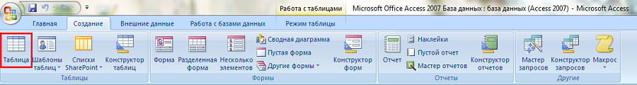
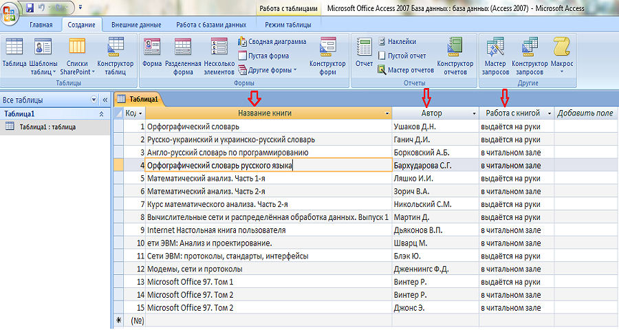
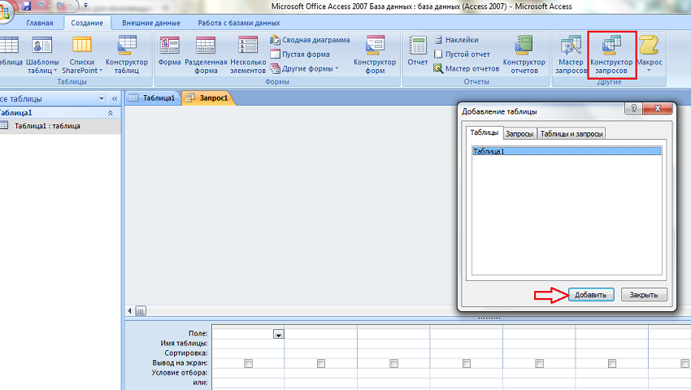
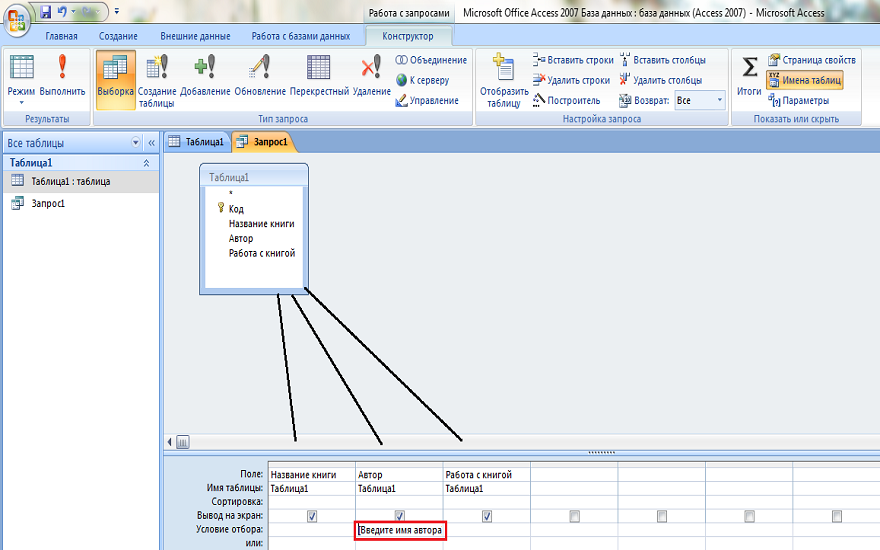
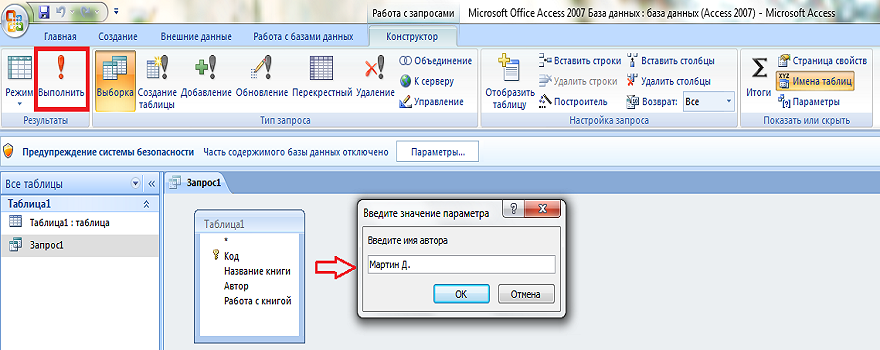
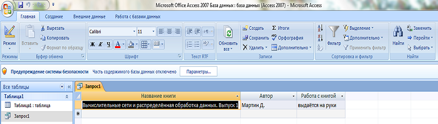

Теоретичний матеріал по виконанню практичних робіт
Створення таблиціДля цього необхідно перейти на вкладку «Создание» і натиснути «Таблица».
У таблиці, що відкрилася необхідно додати заголовки та внести необхідні дані. Після введення даних зберігаємо таблицю
 Створення запитуЗапит в БД створюється на основі таблиці, створеної заздалегіть. Для того щоб створити запит переходим на вкладку «Создание» та обираємо «Конструктор запросов». У вікні «Добавление таблицы» вибираємо потрібну таблицю.
Дані з таблииці переносимо в «Поле» і «Имя таблицы». Також, додаємо текст запиту. В даному прикладі «Введите имя автора».
Виконавши попередні дії, натискаємо «Выполнить». Після цього відкриється вікно запиту, в якому необхідно ввести дані, які запитиють і натиснути «ОК».
Ввівши дані отримуємо результат нашого запиту.
